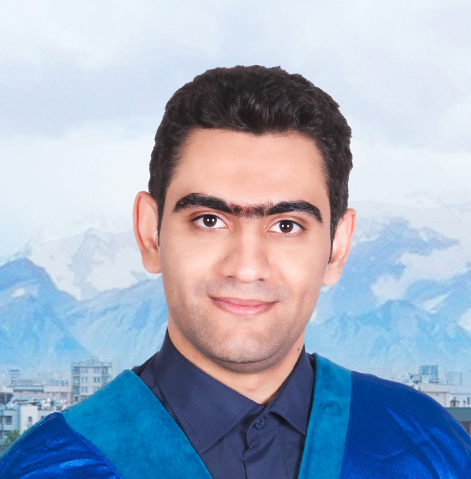

|  |
Ali Lotfi Rezaabad The University of Texas at AustinPh.D. Student, Department of Electrical and Computer Engineering Email: alotfi 'at' utexas 'dot' edu I am a second-year Electrical Engineering Phd Student at The University of Texas at Austin, conducting research in artificial intelligence under supervision of Sriram Vishwanath. I am interested in statistical learning inference and information theory. Previously, I got my M.Sc. in Electrical Engineering at Sharif University of Technology in 2016. During my M.Sc., I focused on wireless communication in general, and millimeter wave 5G and its network infrastructures in particular under the supervision of Prof. Jawad A. Salehi. I was also a graduate research assistant at ONRL . Before that, I obtained my B.Sc. from Kerman University . |
PALISADE: Long Short-Term Memory Spiking Networks and Their Applications
Submitted to ICML 2019
Ali Lotfi Rezaabad, Sriram Vishwanath
Ultra-Dense 5G Small Cell Deployment for Fiber and Wireless Backhaul-Aware Infrastructures
IEEE Transactions on Vehicular Technology, vol. 67, no. 12, pp. 12231-12243, Dec. 2018.
Ali Lotfi Rezaabad, Hamzeh Beyranvand, Jawad A. Salehi, Martin Maier
[IEEE][Arxiv]
Performance enhancement of the Golden code by utilizing the ORIOL antenna
IST 2016
Vahid Amiri, Mohammad Hosseini, Ali Lotfi Rezaabad, Siamak Talebi
[IEEE][Arxiv]
Two quasi orthogonal space-time block codes with better performance and low complexity decoder
CSNDSP 206
Ali Lotfi Rezaabad, Ata Chizari, Siamak Talebi
[IEEE][Arxiv]